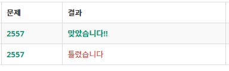
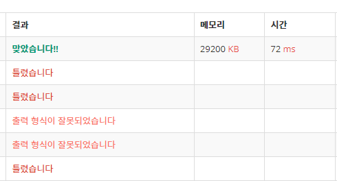

백준 (1)
(2557, 8958, 1000, 1001, 1008,
2935, 2753, 2884, 5063,4101)
백준 관련 글
- 백준 (1) (2557, 8958, 1000, 1001, 1008, 2935, 2753, 2884, 5063, 4101)
- 백준 (2) (1018, 1085, 1181, 1259, 1436, 1654, 1874, 1920)
- 백준 (3) 문자열 알고리즘(11720, 8958, 1152, 10809, 1157, 9012, 11718)
- 백준 (4) (1157, 1546, 2577, 2675, 2908, 1018, 1436, 1259, 7568, 10250)
- 백준 (5) 정렬 알고리즘(2750,11399,2751,1427, 10989,1181,11650)
- 백준 (6) (3085, 2563, 4673, 5635, 11170)
- 백준 (7) 스택 알고리즘(10828,10773,1874,10799, 4949,1406,2493)
백준 10문제를 풀어보았다.
2557. Hello World
https://www.acmicpc.net/problem/2557
Hello World!를 출력해야하는데 Hello World를 출력하여서 한번 틀렸다. 문제를 잘 읽어야한다.

print("Hello World!")
Hello World!
8958. OX퀴즈
https://www.acmicpc.net/problem/8958
for문을 이용하여 입력받을 ox의 갯수를 입력받고 for문 중첩을 이용하여 ox의 길이를 파악하고 if문으로 ox 여부를 확인하였다. ox의 연속성에 따른 점수변화를 num_score로 두고 total_score을 num_score의 합으로 설정하였다.
num=int(input())
for i in range(num):
ox=input()
total_score=0
num_score=0
for i in range(len(ox)):
if (ox[i]=='O') is True:
num_score=num_score+1
else:
num_score=0
total_score=total_score+num_score
print(total_score)
5
OOXXOXXOOO
10
OOXXOOXXOO
9
OXOXOXOXOXOXOX
7
OOOOOOOOOO
55
OOOOXOOOOXOOOOX
30
1000. A+B
https://www.acmicpc.net/problem/1000
map을 이용하여 a와 b를 사이 공백으로 분류시켜주는 것이 필요한 문제이다.
a,b=map(int,input().split())
if a >0 and b<10:
print(a+b)
1 2
3
1001. A-B
https://www.acmicpc.net/problem/1001
위 문제와 마찬가지로 map을 이용하여 a와 b를 사이 공백으로 분류시켜주는 것이 필요한 문제이다.
a,b=map(int,input().split())
if a >0 and b<10:
print(a-b)
3 2
1
1008. A/B
https://www.acmicpc.net/problem/1008
위 문제와 마찬가지로 map을 이용하여 a와 b를 사이 공백으로 분류시켜주는 것이 필요한 문제이다.
무한 소수일 경우
a,b=map(int,input().split())
if a >0 and b<10:
print(a/b)
1 3
0.3333333333333333
유한 소수일 경우
a,b=map(int,input().split())
if a >0 and b<10:
print(a/b)
4 5
0.8
2935. 소음
https://www.acmicpc.net/problem/2935
a와 b는 정수형으로 입력받고 + 와 * 는 문자형으로 입력받았다. a와 b가 10의 제곱 형태이므로 반복문을 통하여 10 ** i, 10 ** j로 제곱 형태를 판별하였고 + 와 * 는 if문으로 구분지어서 계산을 해주었다. 파이썬에서는 제곱을 ** 형태로 표현하는 것을 상기해야한다.
*를 이용한 경우
a=int(input())
cal=input()
b=int(input())
for i in range(99):
for j in range(99):
if (a==10**i) is True and (b==10**j) is True:
if cal=='+':
print(a+b)
if cal=='*':
print(a*b)
1000
*
100
100000
+를 이용한 경우
a=int(input())
cal=input()
b=int(input())
for i in range(99):
for j in range(99):
if (a==10**i) is True and (b==10**j) is True:
if cal=='+':
print(a+b)
if cal=='*':
print(a*b)
10000
+
10
10010
2753. 윤년
https://www.acmicpc.net/problem/2753
입력받은 연도를 1 이상 4000 이하로 제한하고 연도를 4로 나눈 나머지가 0, 100으로 나눈 나머지가 0이 아닌 경우로 하나, 400으로 나눈 나머지가 0인 경우 하나로 나누어서 1을 출력해주고 나머지는 0을 출력하는 형태로 만들었다. 나머지는 %로 구한다는 것을 상기해주었다.
윤년인 경우
year=int(input())
if year>=1 and year<=4000:
if year%4==0 and year%100!=0:
print(1)
elif year%400==0:
print(1)
else:
print(0)
2000
1
윤년이 아닌 경우
year=int(input())
if year>=1 and year<=4000:
if year%4==0 and year%100!=0:
print(1)
elif year%400==0:
print(1)
else:
print(0)
1999
0
2884. 알람 시계
https://www.acmicpc.net/problem/2884
위에 사칙연산 문제와 같이 map을 이용해서 시와 분을 분리하여 입력받는다. 우선 시를 0 이상 23 이하, 분을 0 이상 59 이하로 한정해었다. 첫번째 경우 분이 45 이상일 경우 분에서 45를 빼주더라도 시간은 변하지 않는다. 따라서 시간, 분-45 를 출력해주면 된다. 두번째 경우 분이 45 미만일 경우 시가 하나 작아진다. 0 시 45 분 이전에는 날짜가 바뀌므로 23 에서 시를 빼주고 나머지 경우는 시에서 1 빼준다. 분이 45 미만일 경우 60 - (45 - 분) 해주면 바뀐 분이 나온다. 따라서 분 + 15 로 표현해 주었다.

시와 분 모두 바뀔 때
h,m=map(int,input().split())
if 0<=h<=23 and 0<=m<=59 :
if m-45>=0:
print(h,m-45)
else:
if h-1<0:
print(23-h,m+15)
else:
print(h-1,m+15)
10 10
9 25
날짜 까지 바뀔 때
h,m=map(int,input().split())
if 0<=h<=23 and 0<=m<=59 :
if m-45>=0:
print(h,m-45)
else:
if h-1<0:
print(23-h,m+15)
else:
print(h-1,m+15)
0 30
23 45
5063. TGN
https://www.acmicpc.net/problem/5063
test_case를 입력받아서 for문의 횟수를 한정시킨다. r, e, c를 map을 이용하여 입력받았으며 범위를 한정시켜주었다. 이때 (-10) ** 6으로 잘못 작성하여서 코드가 실행되지 않았다. 광고 비용이 광고 수익과 일반 수익의 차보다 작을 때 광고를 하고 같으면 소용이 없고 크면 광고를 하지 않아야하므로 if문으로 구분시켰다.
test_case=int(input())
for i in range(test_case):
r,e,c=map(int,input().split())
if -(10**6)<=r<=(10**6) and -(10**6)<=e<=(10**6) and 0<=c<=(10**6):
if e-r>c:
print('advertise')
elif e-r==c:
print('does not matter')
else:
print('do not advertise')
3
0 100 70
advertise
100 130 30
does not matter
-100 -70 40
do not advertise
4101. 크냐?
https://www.acmicpc.net/problem/4101
while 반복문을 사용하여 계속 두 숫자를 입력받았으며 map을 통하여 공백을 기준으로 숫자를 나누었다. 먼저 두 숫자가 0이면 해당 while문이 정지를 하게 만들어주고, 그 뒤에 두 숫자의 범위가 True면 두 숫자의 대소비교를 진행하였다.
while True:
a,b=map(int,input().split())
if a==0 and b==0:
break
if 0<a<=10**6 and 0<b<=10**6:
if a>b:
print("Yes")
else:
print("No")
1 19
No
4 4
No
23 14
Yes
0 0